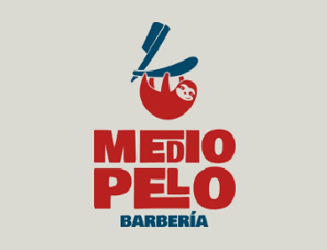
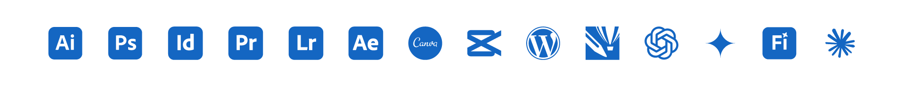

¡Hola! soy Damián Otero
Diseñador Gráfico
15 años creando identidades, comunicación visual y piezas gráficas desde el concepto hasta la producción final.
Diseño con una mirada integral
Soy Diseñador Gráfico con 15 años de experiencia en comunicación visual, branding, diseño editorial y producción gráfica. Me especializo en desarrollar identidades visuales, materiales institucionales, contenido para redes sociales y piezas impresas para organizaciones, empresas y proyectos educativos. Mi experiencia abarca todo el proceso de diseño, desde el concepto y desarrollo visual hasta la producción final, combinando criterio creativo con conocimiento técnico y herramientas de IA para optimizar procesos y mantener la consistencia de marca.
Proyectos destacados

Experiencias
EDUCACIÓN PARA COMPARTIR
DISEÑADOR GRÁFICO · CDMX, MÉXICO
2022 — 2026
- Branding: Identidades visuales y materiales institucionales.
- Editorial: Informes, manuales, guías y publicaciones.
- Digital: Redes sociales, infografías, banners, motion graphics.
- Audiovisual: Fotografía, edición y contenido para eventos y redes.
TGI PACK
ANALISTA DE PRESUPUESTOS & DESARROLLADOR DE PRODUCTO
2013 — 2021
- Presupuestos: Desarrollo de presupuestos y análisis de factibilidad para proyectos de producción gráfica.
- Desarrollo de producto: Trabajo junto a los equipos de diseño y producción en el desarrollo de nuevos productos gráficos.
- Proveedores: Gestión de proveedores, negociación de costos y definición de especificaciones técnicas.
- Coordinación: Planificación integral de proyectos y coordinación entre las áreas de diseño, producción y compras.
IMPRENTA ALL GRAPH
DISEÑADOR GRÁFICO
2010 — 2012
- Diseño: Desarrollo de piezas gráficas destinadas a impresión offset y producción gráfica.
- Preprensa: Gestión y preparación de archivos para el proceso de producción.
- Producción gráfica: Seguimiento del proceso de impresión y producción de las piezas.
- Atención al cliente: Atención personalizada y traducción de necesidades comerciales en soluciones gráficas.
Herramientas
